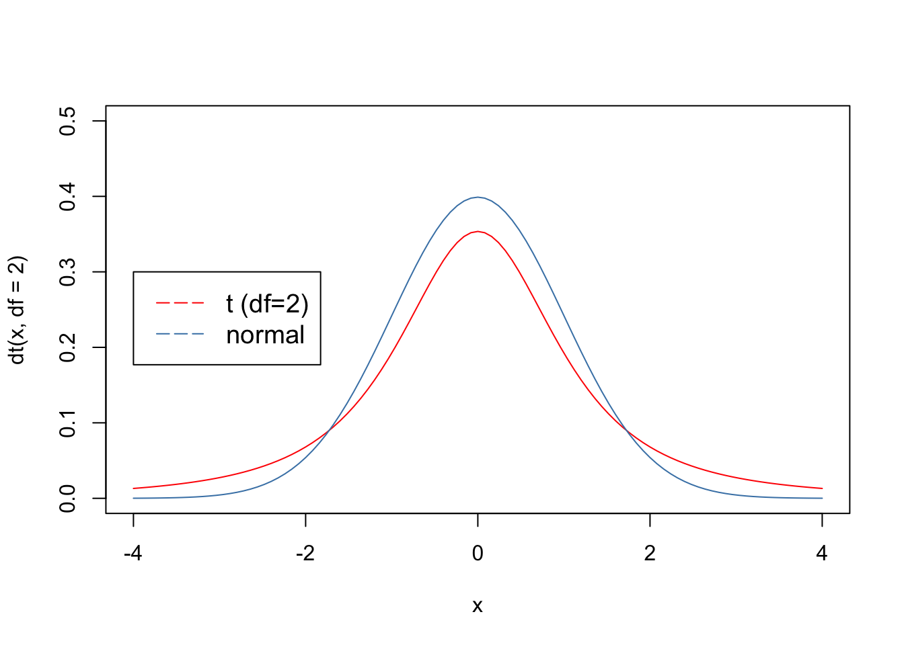
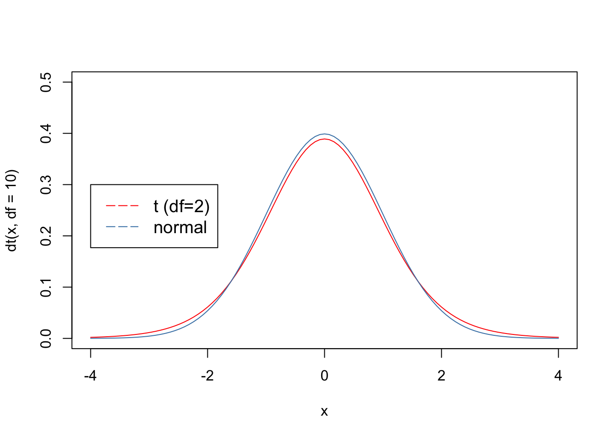
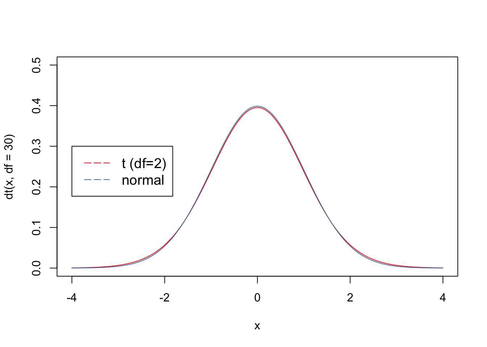

Chapter 11 Effect Size & Significance
Often times, we will observe a difference between the means of two groups. These groups could be variables of any factor. For example, age could be a factor an we are investigating the difference in voice pitch between children and adults. Or, we could be looking at the difference between the frequency of using the word darlamak between members of Gen X and Gen Z. Yet another example would be looking at the difference between the average valence of smell and taste words.
In all these cases, we are comparing two means. So, let’s say we collect data from 100 adults and 100 children and observe that on average children’s fundamental frequencies in their voice pitch is 100Hz higher than those of adults.
What have we found? Is this a big difference? (As humans we are usually able to distinguish between an adult and a child when they speak. So, assuming that fundamental frequency is a predictor of adult vs child, then we know that some level of difference in Hertz is the source of this difference. But what is that level?)
Let’s say we run another experiment with 5 children and 5 adults. Now, we find the average difference to be 200. So, once again, we face the same question. Is 100 big? Is 200 big? Obviously 200 is bigger than 100 but we don’t know if these are big numbers or not.
Once again, we need to think of magnitude not in terms of absolute values but relative to a population (e.g. humans, children, adults, men, women, etc.). So, it would be great if we could figure out a way to calculate the effect size of a predictor (e.g. being adult or being a child) in a standardized way. If we have a standard definition of effect size, then we can compute this for any kind of metric.
As we are trying to figure out a standardized effect size (and other values), we’ll keep three main points in mind:
- Magnitude of difference
- The bigger the difference between (means of) two sample groups, the more you should expect to see a difference in the population.
- Variability in the data
- The less variability in the data, the more certain you’ll be about the estimate.
- Sample Size
- The bigger the sample size, the more accurate is your measurement of the difference.
11.1 Cohen’s d
Cohen’s d is the measure used to quantify the strength of a difference between two means (m1 and m2). The formula for Cohen’s d is given below:
\[d = \frac{m_1-m_2}{s}\] where: \[m_1 = \text{mean of group 1}\] \[m_2 = \text{mean of group 2}\]
\[s = \text{pooled standard deviation}\]
We’ll calculate s using the formula below for pooled standard deviation:
\[s = \sqrt{\frac{(n_1-1)*sd_1^2 + (n_2-1)*sd_2^2}{n_1+n_2-2}}\]
where:
\[n_1 = \text{number of items in group 1}\]
\[n_2 = \text{number of items in group 2}\]
\[sd_1 = \text{standard deviation of group 1}\]
\[sd_2 = \text{standard deviation of group 2}\]
The reason why we are calculating the pooled standard deviation is to make sure that our standard deviations that come from different means (i.e. groups of data) are weighted. Below, we’ll see that the pooled standard deviation has a slightly different value than the standard deviation of the whole data.
Let us try Cohen’s d for the Smell and Taste data.
First, load the data and select the relevant data using the filter function.
#Import tidyverse
library(tidyverse)
#Read in the data
data <- read_csv('data/winter_2016_senses_valence.csv')
#filter in the data for the relevant conditions (Taste and Smell)
senses_data <- filter(data, Modality %in% c('Taste', 'Smell'))
#print the head to see what it looks like
data## # A tibble: 405 × 3
## Word Modality Val
## <chr> <chr> <dbl>
## 1 abrasive Touch 5.40
## 2 absorbent Sight 5.88
## 3 aching Touch 5.23
## 4 acidic Taste 5.54
## 5 acrid Smell 5.17
## 6 adhesive Touch 5.24
## 7 alcoholic Taste 5.56
## 8 alive Sight 6.04
## 9 amber Sight 5.72
## 10 angular Sight 5.48
## # ℹ 395 more rowsLet us get the means for each category.
#calculate means for each condition (Taste, Smell)
means <- senses_data %>%
group_by(Modality) %>%
summarize(avg = mean(Val))
#print means to see what it looks like
means## # A tibble: 2 × 2
## Modality avg
## <chr> <dbl>
## 1 Smell 5.47
## 2 Taste 5.81Let us get the length of each group (i.e. number of items in each group).
#get the number of items for each condition (Taste, Smell)
lengths <- senses_data %>%
group_by(Modality) %>%
summarize(N = n())Let us now calculate s (pooled standard deviation).
#calculate standard deviation for each condition (Taste, Smell)
s_devs <- senses_data %>%
group_by(Modality) %>%
summarize(s = sd(Val))
#calculate pooled standard deviation using the formula above
s <- sqrt(((lengths$N[1]-1)*(s_devs$s[1]^2) + (lengths$N[2]-1)*(s_devs$s[2]^2))/(lengths$N[1]+lengths$N[2]-2))
#print the pooled standard deviation
s## [1] 0.3148274## [1] 0.3519115Now we can calculate Cohen’s d.
## [1] -1.070784We can also use the package effsize to calculate Cohen’s d. You’ll see observe a difference between our calculation and the calculation given by the effsize package This is mainly because they use a slightly difference way of calculating variation in the data (the denominator). That’s not a huge difference.
##
## Cohen's d
##
## d estimate: -1.070784 (large)
## 95 percent confidence interval:
## lower upper
## -1.5955866 -0.5459824How to interpret Cohen’s d?
| Cohen’s d | Magnitude |
|---|---|
| |0.2| | small |
| |0.5| | medium |
| |0.8| | large |
Figure 11.1: Cohen’s d.
11.2 Standard Error
Cohen’s d is a standard measure of difference in magnitude between two samples. It does not care about the sample size though. Your sample size for each group could be 2, 200, 2K, 2M, and so on.
Although, Cohen’s d can tell us whether the difference between the two samples is large, it won’t tell us much about our population.
Here’s a small example. I want to test if there is a difference between the voice pitch of people who wear blue shirts and people who wear red shirts. Assume that the following is my data.
| Participant (by shirt color) | Fundamental Frequency |
|---|---|
| Blue 1 | 175 |
| Blue 2 | 125 |
| Red 1 | 220 |
| Red 2 | 190 |
Let us run Cohen’s d on this data to see what the magnitude of the difference is.
## [1] -55##
## Cohen's d
##
## d estimate: -1.886484 (large)
## 95 percent confidence interval:
## lower upper
## -7.058361 3.285392We get a large effect. However, there’s no way we can conclude that shirt color has anything to do with someone’s voice pitch. We cannot generalize to the population. We observe a difference but we probably have a decent error margin in our prediction. To quantify this error, we need to introduce a new metric standard error.
Standard Error (SE) is a combination of the variability in the data and the sample size
\[SE = \frac{s}{\sqrt{N}}\]
- s = standard deviation
- N = sample size
The bigger the standard error, the less accurate is your estimation of the population parameters. This means your estimation (of the parameters, i.e. mean and standard deviation) is less reliable. The smaller the SE, the more accurate is your calculation of the population parameter estimates.
As you can see from the formula:
- SE will increase as your standard deviation grows (i.e. there is more variance in the data)
- SE will decrease as your sample size grows
Let us calculate the standard error for each of our means.
#Calculate Standard Errors
SE_blue <- sd(blue)/sqrt(2)
SE_red <- sd(red)/sqrt(2)
#print Standard Error for blue shirts
SE_blue## [1] 25## [1] 15Standard Error tells us how close or far away from the true population mean. In this example, we were trying to get the average voice pitch for people wearing a blue shirt and people wearing a red shirt. In each sample, we have only 2 samples. Obviously, this is very little data and the Standard Errors are going to be big.
11.3 Confidence Interval
Confidence interval is a metric that helps you determine the level of confidence in your population parameter estimates. The formula for 95% Confidence Interval is as follows:
\[CI = [mean \pm 1.96 * SE ]\] Let us decompose this formula a bit.
- mean is the sample mean of some sample
- SE is the standard error of the sample
- \(\pm\) indicates that the value is going to be somewhere between mean plus or minus some value.
- 1.96 is a special number that indicates the 95% CI.4
As the name suggests, CI is an interval and the numbers returned define the range of possible values for 95% of the time.
Let us calculate the 95% confidence intervals for our our means for the blue and red data.
#calculate means
mean_blue <- mean(blue)
mean_red <- mean(red)
#calculate CIs
CI_blue <- c(mean_blue - 1.96 * SE_blue, mean_blue + 1.96 * SE_blue)
CI_red <- c(mean_red - 1.96 * SE_red, mean_red + 1.96 * SE_red)
name <-c('mean','SE','CI_min','CI_max')
val_blue<-c(mean_blue,SE_blue,CI_blue)
val_red<-c(mean_red,SE_red,CI_red)
#print mean, SE, and CI for blue
blue_st <- data.frame(name, val_blue)
blue_st## name val_blue
## 1 mean 150
## 2 SE 25
## 3 CI_min 101
## 4 CI_max 199## name val_red
## 1 mean 205.0
## 2 SE 15.0
## 3 CI_min 175.6
## 4 CI_max 234.411.4 Standard Error of the difference of two means
In the previous sections, we calculated the SE and CI for each sample (blue and red). However, what we are ultimately interested in is the difference in the means between two groups. The difference in the mean is what will tell us if there is a significant difference between the voice pitches of people wearing different colors. To calculate the Standard Error for the difference in mean of two samples, we use the formula below.
\[SE_{diff} = \sqrt{\frac{SD_1^2}{n_1}+\frac{SD_2^2}{n_2}}\] Let us calculate the SE of the difference in mean.
#calculate standard deviations
sd_blue <- sd(blue)
sd_red <- sd(red)
# calculate SE_diff
SE_diff <- sqrt(sd_blue^2/2 + sd_red^2/2)
#print SE_diff
SE_diff## [1] 29.15476Let us now calculate the 95% CI for the difference in means.
#calculate the difference in means
diff_mean <- mean_blue - mean_red
#calculate the 95% CI
CI_diff <- c(diff_mean-1.96*SE_diff, diff_mean+1.96*SE_diff)
#print the CI_diff by rounding the numbers to 2 decimal point
round(CI_diff, 2)## [1] -112.14 2.1411.5 Hypothesis Testing
Remember that throughout the semester we talked about forming and testing hypotheses. Let us form our hypotheses and then test them.
Let us build our alternative hypothesis.
- H1: There is a difference in voice pitch between people who wear blue and people who wear red.
Now, let us build our null hypothesis.
- H0: There is no difference in voice pitch between people who wear blue and people who wear red.
In hypothesis testing framework, we do not try proving our alternative hypothesis (H1). Instead, we try rejecting the null hypothesis.
To reject the null hypothesis we do the following:
- Make an observation.
- In this case, our observation is the difference in means between two colors.
- Calculate the probability of making this observation.
- This means we need to find the p-value of the observation.
- Check the p-value against a critical value called alpha (\(\alpha\)).
- If the p-value is smaller than the critical value, then we reject the null hypothesis.
- else, we maintain the null hypothesis.
What is the critical value. Critical value is a value that we define depending on the nature of our question. It’s up to us and how we want to interpret the results. The scientific community has converged on using several critical values.
- \(\alpha\) = 0.05 (commonly adopted for social sciences)
- \(\alpha\) = 0.01
- \(\alpha\) = 0.001
So, how do we calculate the p-value for our null hypothesis?
In other words, how do we calculate the p-value for the difference we observe between people who wear blue and red? To do this, we need a particular method that allows us to calculate some statistics for the difference between two means. For this, we will use a t-test which allows us to calculate a standardized t-score which comes from a particular distribution called t-distribution. Once we have a t-score, we can check it against the t-distribution to calculate its p-value.
11.6 Calculating the t-score
t-score is calculated using the following formula.
\[t = \frac{mean1-mean2}{SE_{diff}}\] What the t-score encodes is 1) magnitude of the difference, 2)Variability in the data 3) Sample size. So, all of the information we need.
Let us calculate the t-score for our data.
## [1] -1.886484How do we interpret the t-score t-score is going to be a value from a t-distribution. A t-distribution is very similar to a normal distribution except that it has heavier tails. What this means is that there is a higher probability of having more extreme values especially with small data sets. Let’s take a look at the t-and normal distributions.
A t-distribution is like a normal distribution but has an additional parameter called degrees of freedom. This is relatively vague concept we won’t go into. You can google it and find what it means intuitively. For our purposes, we will just assume that degrees of freedom is calculated by deducing 1 from our sample size.
- df_blue = sample_size_blue - 1
- df_red = sample_size_red - 1
When we are calculating the degrees of freedom for both samples, then we calculate it using the formula below:
- df = sample_size_blue + sample_size_red -2
Given that we have a total of 4 data points, then our df will be 2.
curve(dt(x, df=2), from=-4, to=4, col = 'red',ylim=c(0,0.5)) # 2 degrees of freedom
curve(dnorm(x), from=-4, to=4, col = 'steelblue',add=TRUE)
legend(-4, .3, legend=c("t (df=2)", "normal"),
col=c("red", "steelblue" ), lty=5, cex=1.2)
t-distribution approaches normal distribution (for z-scores) as the degrees of freedom increases. At 30 degrees of freedom or above, it becomes very similar to normal distribution.5
curve(dt(x, df=10), from=-4, to=4, col = 'red',ylim=c(0,0.5)) #10 degrees of freedom
curve(dnorm(x), from=-4, to=4, col = 'steelblue',add=TRUE)
legend(-4, .3, legend=c("t (df=2)", "normal"),
col=c("red", "steelblue" ), lty=5, cex=1.2)
curve(dt(x, df=30), from=-4, to=4, col = 'red',ylim=c(0,0.5)) #30 degrees of freedom
curve(dnorm(x), from=-4, to=4, col = 'steelblue',add=TRUE)
legend(-4, .3, legend=c("t (df=2)", "normal"),
col=c("red", "steelblue" ), lty=5, cex=1.2)
11.7 p-value
p-value is the probability of observing a particular t-score given a t-distribution. So, all we need to do now is to calculate the p-value for the t-score we observed above. There are various ways of doing this. Many people use a t-table to do the calculation. See this link.
Alternatively, we can calculate it using the pt() function, which takes the following arguments.
- t-score
- degrees of freedom
- A Boolean for lower.tail (optional)
## [1] 0.1135606The value we get is going to be the probability of t-score on one tail of the distribution (called one-tailed). This is used for a directional hypothesis (e.g. red shirts have a higher voice pitch than blue ones). In our case, we are interested in the difference regardless of the direction. For this, we can simply multiply our p-value by 2 to get a two-tailed distribution.
## [1] 0.2271212It looks like our p-value is larger than the critical value \(\alpha = 0.05\). So, we must cannot reject our null hypothesis. This means that, there is a big chance of observing such a difference in mean when we have only a total of 4 data points.
Even though our effect size is large as can be seen below, our results are not significant. In other words, the big difference is due to chance and we cannot conclude that there is a difference in the voice pitches of people who wear blue and people who wear red.
##
## Cohen's d
##
## d estimate: -1.886484 (large)
## 95 percent confidence interval:
## lower upper
## -7.058361 3.28539211.8 Type I and Type II Errors
Sometimes, we might find \(p < 0.05\) which suggests that we have found a significant result. However, this is not always true. Such errors are called Type I error (also known as False Positive). Other times, there might be a significant difference between our two groups but we might fail to identify this significance because we got \(p \geq 0.05\). Such errors are called Type II errors (a.k.a. False Negative). Such errors usually occur when we don’t have sufficient data (i.e. sample size is too small).
| Error Type | Explanation | a.k.a. |
|---|---|---|
| Type I | \(p < 0.05\) but in fact there is no significant difference | False Positive |
| Type II | \(p \geq 0.05\) but in fact there is a significant difference | False Negative |
11.8.1 Type I Error
Remember that the difference between two groups of data is statistically significant means that there is an actual meaningful difference in the way these data are generated. This difference can be small or big in terms of its effect size. This difference might be caused by one factor or by many factors. What matters is that there is an underlying difference in the mechanism that is generating the data. This underlying difference is causing the actual variance in the data from two distinct groups.
Also remember that the variance within or across two groups can also be caused by completely random factors. For example, when you are measuring the reaction time, a little insect in the room might lead to a bit of a distraction and increase the reaction time.
Given all this background, let us see a little bit of a random data that was generated from a single distribution.
## [1] -0.2918083 1.3658382 0.8477967 0.2659059 0.2180279 1.5515670
## [7] -0.6108410 1.7481764 1.4492960 0.1299375## [1] 0.902252069 1.893100214 2.350915095 2.488970394 1.371067213
## [6] 0.785526756 1.455494590 0.741888890 -0.002923752 1.844143483You see that the data points are different but the parameters are the same. So underlyingly, they come from the same distribution, same data generation process, there is no actual difference between the two datasets in terms of the underlying mechanism.
Let us now pass the data through a t test for a few times to see if we can ever find a statistically significant difference.
##
## Welch Two Sample t-test
##
## data: rnorm(10, mean = 1, sd = 1) and rnorm(10, mean = 1, sd = 1)
## t = 1.2268, df = 13.421, p-value = 0.241
## alternative hypothesis: true difference in means is not equal to 0
## 95 percent confidence interval:
## -0.5369389 1.9584459
## sample estimates:
## mean of x mean of y
## 1.5472968 0.8365433##
## Welch Two Sample t-test
##
## data: rnorm(10, mean = 1, sd = 1) and rnorm(10, mean = 1, sd = 1)
## t = 0.36582, df = 17.977, p-value = 0.7188
## alternative hypothesis: true difference in means is not equal to 0
## 95 percent confidence interval:
## -0.8814711 1.2531201
## sample estimates:
## mean of x mean of y
## 0.8219205 0.6360959##
## Welch Two Sample t-test
##
## data: rnorm(10, mean = 1, sd = 1) and rnorm(10, mean = 1, sd = 1)
## t = -0.082117, df = 16.257, p-value = 0.9356
## alternative hypothesis: true difference in means is not equal to 0
## 95 percent confidence interval:
## -1.0340503 0.9568318
## sample estimates:
## mean of x mean of y
## 0.9797846 1.0183939##
## Welch Two Sample t-test
##
## data: rnorm(10, mean = 1, sd = 1) and rnorm(10, mean = 1, sd = 1)
## t = 2.3062, df = 17.808, p-value = 0.03335
## alternative hypothesis: true difference in means is not equal to 0
## 95 percent confidence interval:
## 0.06683172 1.44707262
## sample estimates:
## mean of x mean of y
## 1.5390768 0.7821246As you can see, the fourth model came out to be statistically significant. This is a Type I Error.
11.8.2 Typee II Error
Now, let us create data with different parameters. This time, the means are going to be different.
## [1] 1.51270701 0.25792144 0.08844023 -0.12089654 -1.19432890 0.61199690
## [7] -0.21713985 -0.18275671 0.93334633 0.82177311## [1] 2.3921164 0.5238261 1.6503486 2.3911105 -0.1107889 0.1392074
## [7] -0.1317387 -0.4592140 1.0799826 1.6532043Now, let’s run the model a few times again.
##
## Welch Two Sample t-test
##
## data: rnorm(10, mean = 0, sd = 1) and rnorm(10, mean = 1, sd = 1)
## t = -0.49924, df = 13.421, p-value = 0.6257
## alternative hypothesis: true difference in means is not equal to 0
## 95 percent confidence interval:
## -1.5369389 0.9584459
## sample estimates:
## mean of x mean of y
## 0.5472968 0.8365433##
## Welch Two Sample t-test
##
## data: rnorm(10, mean = 0, sd = 1) and rnorm(10, mean = 1, sd = 1)
## t = -1.6028, df = 17.977, p-value = 0.1264
## alternative hypothesis: true difference in means is not equal to 0
## 95 percent confidence interval:
## -1.8814711 0.2531201
## sample estimates:
## mean of x mean of y
## -0.1780795 0.6360959##
## Welch Two Sample t-test
##
## data: rnorm(10, mean = 0, sd = 1) and rnorm(10, mean = 1, sd = 1)
## t = -2.209, df = 16.257, p-value = 0.04186
## alternative hypothesis: true difference in means is not equal to 0
## 95 percent confidence interval:
## -2.03405031 -0.04316822
## sample estimates:
## mean of x mean of y
## -0.02021535 1.01839391##
## Welch Two Sample t-test
##
## data: rnorm(10, mean = 0, sd = 1) and rnorm(10, mean = 1, sd = 1)
## t = -0.74048, df = 17.808, p-value = 0.4687
## alternative hypothesis: true difference in means is not equal to 0
## 95 percent confidence interval:
## -0.9331683 0.4470726
## sample estimates:
## mean of x mean of y
## 0.5390768 0.7821246As you can see, the results end up being not significant despite an actual difference in the parameters that generate data.
11.8.3 Statistical Power
The rate at which a model would makes a Type II error is called Type II Error rate represented as \(\beta\). We want to minimize \(\beta\) as much as possible. The lower the error rate, the more powerful our model is. A standard way of measuring how powerful our model is the concept of statistical power.
- Statistical power = 1-\(\beta\)
The higher the statistical power of a model, the more reliable it is. Often people aim for a value above 80%. To calculate the statistical power of a t test in r, we can use the following code.
effect_size <- cohen.d(rnorm(10,mean =0, sd = 1), rnorm(10,mean =1, sd = 1))$estimate
n <- 10
alpha <- 0.05
power <- power.t.test(n = n, delta = effect_size, sd = 1, sig.level = alpha, type = "two.sample")$power
power## [1] 0.3273469Now, let us try the same data with an increased number of observations.
effect_size <- cohen.d(rnorm(10,mean =0, sd = 1), rnorm(10,mean =1, sd = 1))$estimate
n <- 300
alpha <- 0.05
power <- power.t.test(n = n, delta = effect_size, sd = 1, sig.level = alpha, type = "two.sample")$power
power## [1] 0.999999